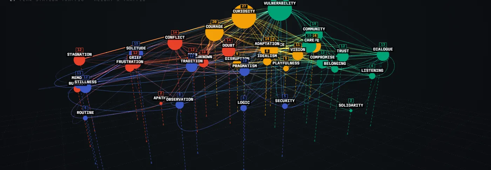
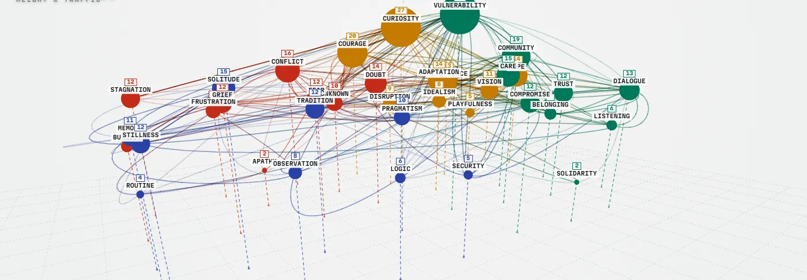

Reading the map
?demo=1). Drop the parameter for the public view.
Select any station to reveal the journeys that passed through it.


Explore the map in 3D See the emotional landscape from another perspective. Rotate, zoom, and explore the connections in three dimensions. Open 3D visualization ↗ Opens in a new tab · Best experienced on desktopThe same readings the wall spoke through the night, drawn from the finished set. Drag to browse.
Find a station, a route, or your own path.
Tap a station to filter the journeys above to the ones that crossed it.
The piece, the interaction, and what the map is made of.
Thirty-six emotional states, grouped into four mood categories — Friction & Resistance, Foundations & Reflection, Connection & Empathy, and Momentum & Vision. The layout is a transit map: related states sit near each other, and each category holds its own region of the field.
Each visitor stepped up to a tablet and anchored themselves at one station, then traced a path through the others — where they had come from, where they were going, what they had to cross to get there. Three stops minimum, ten at most. There were no right answers and no shared route, and everyone left with their own path as a keepsake.
Every path joined a public projection the moment it was cast, and the wall read aloud what it found in the accumulating map — the heaviest link, the busiest interchange, the station nobody went near. No single journey says much. Laid over each other, they start to describe a civic mood: what people find hard, what they hold onto, and where they think they are heading.